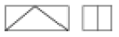
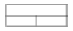
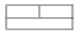
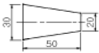
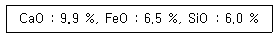

제선기능사 (2005-04-03 기출문제)
1과목: 금속재료일반
1. 청동의 합금원소는?
- Cu-Zn
- Cu-Sn
- Cu-B
- Cu-Pb
(정답률: 73%)

2. 응고범위가 너무 넓거나 성분 금속 상호간에 비중의 차가 클 때 주조시 생기는 현상은?
- 붕괴
- 기포수축
- 편석
- 결정핵 파괴
(정답률: 86%)
3. 바나듐의 기호로 옳은 것은?
- Mn
- Ni
- Zn
- V
(정답률: 96%)
4. 순철의 용융점(℃)은 약 몇℃ 정도인가?
- 768℃
- 1,013℃
- 1,538℃
- 1,780℃
(정답률: 80%)
5. 탄소 2.11 % 의 γ고용체와 탄소 6.68 %의 시멘타이트와의 공정조직으로서 주철에서 나타나는 조직은?
- 펄라이트
- 오스테나이트
- α고용체
- 레데뷰라이트
(정답률: 79%)
6. 고속도강의 성분으로 옳은 것은?
- Cr-Mo-Sn-Zn
- Ni-Cr-Mo-Mn
- C-W-Cr-V
- W-Cr-Ag-Mg
(정답률: 84%)
7. 소성가공에 속하지 않는 가공법은?
- 단조
- 인발
- 표면처리
- 압출
(정답률: 85%)
8. 다음 중 불변강의 종류가 아닌 것은?
- 플래티나이트
- 인바
- 엘린바아
- 아공석강
(정답률: 83%)
9. 재료의 강도를 이론적으로 취급할 때는 응력의 값으로서는 하중을 시편의 실제 단면적으로 나눈 값을 쓰지 않으면 안된다. 이것을 무엇이라 부르는가?
- 진응력
- 공칭응력
- 탄성력
- 하중력
(정답률: 74%)
10. 금속간 화합물에 관한 설명 중 옳지 않은 것은?
- 변형이 어렵다.
- 경도가 높고 취약하다.
- 일반적으로 복잡한 결정구조를 갖는다.
- 경도가 높고 전연성이 좋다.
(정답률: 56%)
11. 탄소강의 표준조직에 대한 설명 중 옳지 않은 것은?
- 탄소강에 나타나는 조직의 비율은 C량에 의해 달라진다.
- 탄소강의 표준조직이란 강종에 따라 A3점 또는 Acm보다 30 ∼ 50℃ 높은 온도로 강을 가열하여 오스테나이트 단일 상으로 한 후, 대기 중에서 냉각했을 때 나타나는 조직을 말한다.
- 탄소강은 표준조직에 의해 탄소량을 추정할 수 없다.
- 탄소강의 표준조직은 오스테나이트, 펄라이트, 페라이트 등이다.
(정답률: 79%)
12. 금속의 결정격자에 속하지 않는 기호는?
- FCC
- LDN
- BCC
- HCP
(정답률: 92%)
13. 티타늄탄화물(TiC)과 Ni의 예와 같이 세라믹과 금속을 결합하고 액상소결하여 만들어 절삭공구로 사용하는 고경도 재료는?
- 서멧(cermet)
- 두랄루민(duralumin)
- 고속도강(high speed steel)
- 인바(invar)
(정답률: 71%)
14. 다음 중 퀴리점이란?
- 동소변태점
- 결정격자가 변하는 점
- 자기변태가 일어나는 온도
- 입방격자가 변하는 점
(정답률: 86%)
15. 변압기, 발전기, 전동기 등의 철심용으로 사용되는 재료는 무엇인가?
- Fe-Si
- P-Mn
- Cu-N
- Cr-S
(정답률: 81%)
2과목: 금속제도
16. 아래와 같은 투상도(정면도 및 우측면도)에 대하여 평면도를 옳게 나타낸 것은?



(정답률: 84%)
17. 제3각법에서 평면도는 어느 곳에 위치하는가?
- 정면도의 위
- 좌측면도의 위
- 우측면도의 위
- 정면도의 아래
(정답률: 95%)
18. 도면의 치수 기입법 설명으로 옳은 것은?
- 치수는 가급적 평면도에 많이 기입한다.
- 치수는 중복되더라도 이해하기 쉽게 여러번 기입한다.
- 치수는 측면도에 많이 기입한다.
- 치수는 가급적 정면도에 기입하되 투상도와 투상도 사이에 기입한다.
(정답률: 86%)
19. 도형이 단면임을 표시하기 위하여 가는실선으로 외형선 또는 중심선에 경사지게 일정 간격으로 긋는 선은?
- 특수선
- 해칭선
- 절단선
- 파단선
(정답률: 80%)
20. 도면에 기입된 구멍의 치수 ø50H7 에서 알 수 없는 것은?
- 끼워맞춤의 종류
- 기준치수
- 구멍의 종류
- IT 공차등급
(정답률: 72%)
21. 아래와 같은 도형의 테이퍼 값은?

- 1/5
- 1/10
- 2/5
- 3/10
(정답률: 83%)
22. 치수 기입시 치수 숫자와 같이 사용하는 기호의 설명으로 잘못된 것은?
- ø: 지름
- R : 반지름
- C : 구의 지름
- t : 두께
(정답률: 94%)
23. 나사의 간략도시에서 수나사 및 암나사의 산은 어떤 선으로 나타내는가? (단, 나사 산이 눈에 보이는 경우임)
- 가는 파선
- 가는 실선
- 중간 굵기의 실선
- 굵은 실선
(정답률: 68%)
24. 도면의 부품란에 기입되는 사항이 아닌 것은?
- 도면명칭
- 부품번호
- 재질
- 부품수량
(정답률: 73%)
25. 제도에 사용하는 다음 선의 종류 중 굵기가 가장 큰 것은?
- 치수보조선
- 피치선
- 파단선
- 외형선
(정답률: 93%)
26. KS의 부문별 분류 기호 중 틀리게 연결된 것은?
- KS A - 전자
- KS B - 기계
- KS C - 전기
- KS D - 금속
(정답률: 90%)
27. 다음 재료 기호 중 고속도 공구강은?
- SCP
- SKH
- SWS
- SM
(정답률: 89%)
28. 고로는 전 높이에 걸쳐 많은 내화벽돌로 쌓여져 있다. 내화벽돌이 갖추어야 될 조건으로 옳지 않은 것은?
- 내화도가 높아야 한다.
- 치수가 정확하여야 한다.
- 침식과 마멸에 견딜 수 있어야 한다.
- 비중이 높아야 한다.
(정답률: 86%)
29. 용광로 조업말기에 TiO2 장입량을 증가시키는 주 이유는?
- 제강 취련 작업을 원활히 하기 위해서
- 용선의 유동성 향상을 위해서
- 노저보호를 위해서
- 샤프트각을 크게 하기 위해서
(정답률: 71%)
30. 고로의 조업에서 고압조업의 효과로 옳지 않은 것은?
- 고[S]의 용선 생산
- 출선량의 증대
- 연료비 저하
- 노황의 안정
(정답률: 72%)
3과목: 제선법
31. 다음 중 염기성 플럭스(flux)는?
- 돌로마이트
- 규석
- 샤모트
- 탄화규소
(정답률: 75%)
32. 용광로 철피 적열상태를 점검하는 방법의 설명으로 옳지 않은 것은?
- 온도계로 온도측정
- 소량의 물로 비등현상 확인
- 조명 소등 후 철피색깔 비교
- 신체 접촉으로 온기 확인
(정답률: 94%)
33. 고로의 수명을 지배하는 요인으로 옳지 못한 것은?
- 노의 설계 및 구성
- 원료 사정과 노의 조업상태는 상관없다
- 노체를 구성하는 내화 재료의 품질과 축로 기술
- 각종 물리적, 화학적 변화
(정답률: 88%)
34. 유안을 제조하는 방법 중 반응열을 이용하여 유안을 건조하는 방법은?
- 습식법
- 건식법
- 석고 사용법
- 아황산가스를 이용하는 방법
(정답률: 81%)
35. 석탄(유연탄)을 대기중에서 장기간 방치하면 산화 현상이 일어난다. 석탄의 산화와 관계가 없는 것은?
- 석탄이 산화하면 온도가 상승한다.
- 석탄이 산화하면 석탄성분 중 점결력이 감소한다.
- 석탄이 발열하면 발화한다.
- 석탄 성분 중 휘발분이 증가한다.
(정답률: 68%)
36. 다음 설비 중 장입물 분포를 제어하는데 이용되는 것은?
- 수평 사운드
- 가스 샘플러
- 무우벌 아아머
- 노정 살수장치
(정답률: 76%)
37. 피환원성이 가장 좋은 것은?
- 펠릿트
- 소결광
- 생광석
- 자철광
(정답률: 54%)
38. 노벽이 국부적으로 얇아져서 노안으로부터 가스 또는 용해물이 분출될 때의 조치사항으로 옳지 않은 것은?
- 냉각판을 넣는다.
- 바람구멍의 지름을 조절한다.
- 외부에서 물을 뿌려 냉각시킨다.
- 보수하지 않고 쇳물이 나오도록 한다.
(정답률: 79%)
39. 고로조업에서 송풍 원단위로 맞는 것은?
- ㎏/T-T
- m3/㎏-m
- Nm3/T-P
- ㎏/m3-T
(정답률: 75%)
40. 각 사업장 간의 재해상황을 비교하는 자료로 사용되는 천인율의 공식은?
- (재해자수/평균근로자수)×1,000
- (평균근로자수/재해자수)×1,000
- (재해자수/평균근로자수)×100
- (평균근로자수/재해자수)×100
(정답률: 78%)
41. 광석을 그 용융 온도 이하에서 가열하여 이산화탄소(CO2)또는 결정수(H2O) 등의 휘발성 분말을 제거하는 조작은?
- 선광(dressing)
- 하소(calcining)
- 배소(roasting)
- 소결(sintering)
(정답률: 83%)
42. 고로에서 코크스비 절감 및 생산성 향상을 위하여 사용하는 열풍로의 열풍은 어느 부분을 통하여 노내로 취입되는가?
- 하부종(large bell)
- 풍구(tuyere)
- 노요(Bosh)
- 노상(Hearth)
(정답률: 86%)
43. 고로에서 주물선과 관련이 가장 깊은 원소는?
- Cu
- Si
- Aℓ
- Sn
(정답률: 71%)
44. 고로의 구조가 아닌 것은?
- 샤프트
- 노복
- 보시
- 축열실
(정답률: 84%)
45. 고로(BF)의 부속 설비로 옳지 않은 것은?
- 풍구
- 장입종
- 스키머
- 소화탑
(정답률: 73%)
4과목: 소결법
46. 소결기의 급광장치 종류가 아닌 것은?
- 호퍼
- 스크린
- 드럼 피더
- 셔틀 컨베이어
(정답률: 77%)
47. 용광로 제련에 사용되는 분광 원료를 괴상화하였을 때 괴상화된 원료의 구비 조건이 아닌 것은?
- 다공질로 노안에서 산화가 잘 될 것
- 오랫동안 보관하여도 풍화되지 않을 것
- 열팽창, 수축 등에 의해 파괴되지 않을 것
- 되도록 모양이 구상화된 형태일 것
(정답률: 71%)
48. 소결공장에서 점화로의 연료로 사용하지 않는 것은?
- C.O.G
- B.F.G
- Coal
- MIXED GAS
(정답률: 76%)
49. 소결광 중에 철 규산염이 많을 때 소결광의 강도와 환원성은?
- 강도는 떨어지고, 환원성도 저하한다.
- 강도는 커지고, 환원성은 저하한다.
- 강도는 커지고, 환원성도 좋다.
- 강도는 떨어지나, 환원성은 좋다.
(정답률: 72%)
50. 소결공정의 믹서(mixer)의 역할이 아닌 것은?
- 수분 첨가
- 장입
- 조립
- 혼합
(정답률: 73%)
51. 소결 원료에서 일반적으로 입도가 6 mm 이하인 소결광을 무엇이라 하는가?
- 스케일
- 반광
- 연진
- 황산소광
(정답률: 72%)
52. 소결용 원료로서 적합치 않은 것은?
- 고로 더스트(dust)
- 스케일
- 사하분광
- 팰릿(pellet)
(정답률: 45%)
53. 소결광 성분이 다음과 같을 때 염기도는?

- 1.51
- 1.65
- 1.86
- 1.92
(정답률: 78%)
54. 확산형 소결광의 장점이 아닌 것은?
- 산화도가 크다.
- 기공율이 좋다.
- 강도가 크다.
- 환원성이 좋다.
(정답률: 51%)
55. 소결 작업에서 최대팽윤 수분이란?
- 부피 비중이 최소가 되는 수분 백분율(%)
- 통기성이 최대로 되는 수분 백분율(%)
- 부피 비중이 최대로 되는 수분 백분율(%)
- 원료 응집이 최대로 되는 수분 백분율(%)
(정답률: 60%)
56. 소결 감산 시의 감산 조치가 아닌 것은?
- 주 배풍기의 댐퍼를 닫는다.
- 장입층후를 높인다.
- 압 장입을 하여 장입밀도를 높게 한다.
- 미분 원료의 배합비를 적게 한다.
(정답률: 52%)
57. 소결용 코크스를 다른 소결원료보다 세립으로 하는 조업상 중요한 이유는?
- 수분의 첨가율 상승
- 성분의 조정
- 강도의 증가
- 적절한 열분포
(정답률: 60%)
58. 가동 부분이 많아서 고장이 많고, 누풍이 많은 결점이 있으나 작업이 간편하며, 작업 인원이 적어도 되고, 대량 생산에 적합한 소결기는?
- 포트 소결기
- 그리나발트 소결기
- 드와이트 · 로이드 소결기
- AIB식 소결기
(정답률: 88%)
59. 석회 소결광에 대한 설명으로 틀린 것은?
- 용광로 내에서 가스의 환원성과 보유열량이 유효하게 이용된다.
- 석회석과 광석이 균일하게 혼합되어 용광로 내의 반응이 촉진된다.
- 많이 사용하면 로황이 불안정하여 고온 송풍이 불가능 하다.
- 용광로 내에 사용하면 연료소비량이 적게 든다.
(정답률: 67%)
60. 펠라타이징법의 소성 경화작업에 사용되는 수직형 소성로의 상부층부터 하부층의 명칭이 옳게 된 것은?
- 건조대 - 가열대 - 균열대 - 냉각대
- 가열대 - 건조대 - 균열대 - 냉각대
- 건조대 - 가열대 - 냉각대 - 균열대
- 균열대 - 건조대 - 가열대 - 냉각대
(정답률: 61%)